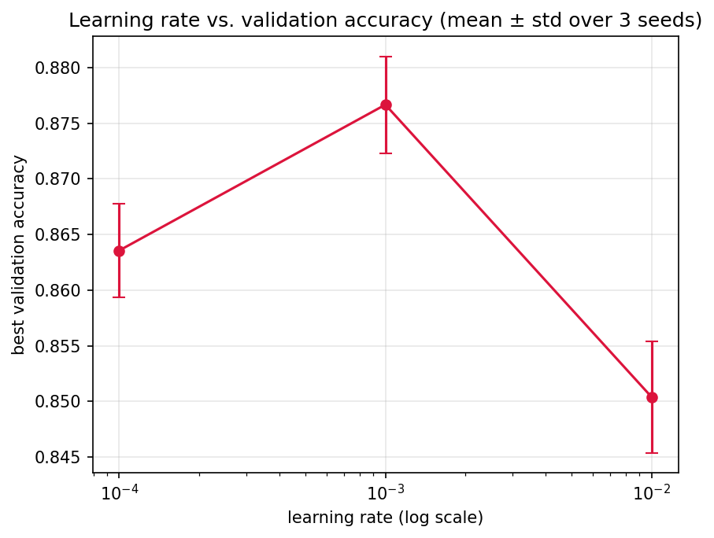

When I trained the same small network twice with different random seeds, the results were not identical. That made me wonder: how much of the difference between two training runs is just random noise, and is it large enough to hide the effect of changing the learning rate?
A learning rate is a number that controls how big a step the optimizer takes each time it updates the weights (the numbers the network learns). Each time the model updates a weight, it does: new weight = old weight - learning rate x gradient. The gradient tells the model which direction reduces its error. If the learning rate is too small, training is very slow and the model barely improves within the 4 epochs I trained for (an epoch is one full pass over the training data). If it is too big, the updates overshoot the minimum, so the loss bounces around and the model may never learn.
A seed is the starting number for the random number generator. Changing it changes the initial weights, the order of the training batches, and the train/validation shuffle, so every run follows a slightly different path. Because one run can be lucky or unlucky, I ran each learning rate with three seeds (42, 43 and 44) instead of trusting a single result. If seeds made no difference, all three runs of a setting would give the same curve, and one run would be enough. In practice they differ a little, so I needed the mean and standard deviation to tell whether a gap between learning rates is bigger than that noise.
I trained a small CNN on a 10,000-image subset of Fashion-MNIST, split 90% train and 10% validation (the validation images are held out to compare settings, and the test set was never used). I used a subset and only 4 epochs so that every run finished in a reasonable time. I used the Adam optimizer and batch size 64, and I kept these fixed in every run. The model is a small CNN with two convolutional blocks (32 and 64 channels, each with batch normalisation and ReLU), a 128-unit fully connected layer and dropout of 0.25, with 421,834 trainable parameters.
I ran two experiments. First, I used the class notebook's sweep of five learning rates (1e-05, 0.0001, 0.001, 0.01 and 0.1) with one seed (42), which gives Figures 1 and 2. Then I repeated three of them (0.0001, 0.001 and 0.01) with seeds 42, 43 and 44, which gives Figure 3 and Table 1, so 9 runs in total. Only the learning rate (and the seed) changed. I started from the class notebook, which already had the seed setting, per-epoch metric logging and plotting functions. What I added was a loop over seeds, a mean and standard deviation summary table, and an error-bar plot.
Code: notebook on GitHub.


| Learning rate | Mean val. |
|---|